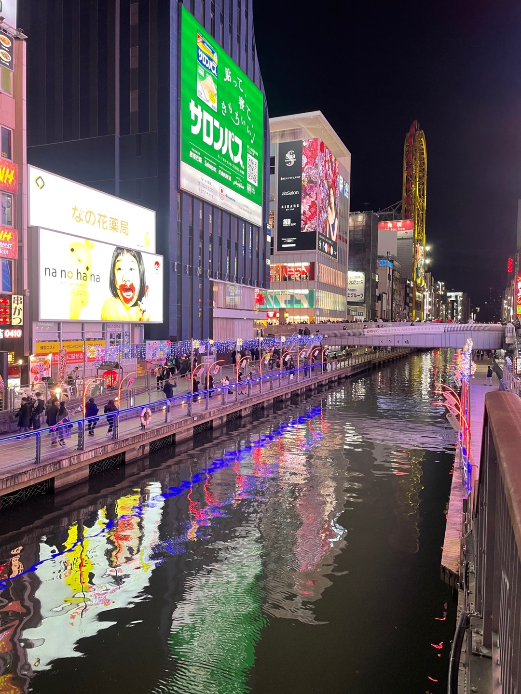
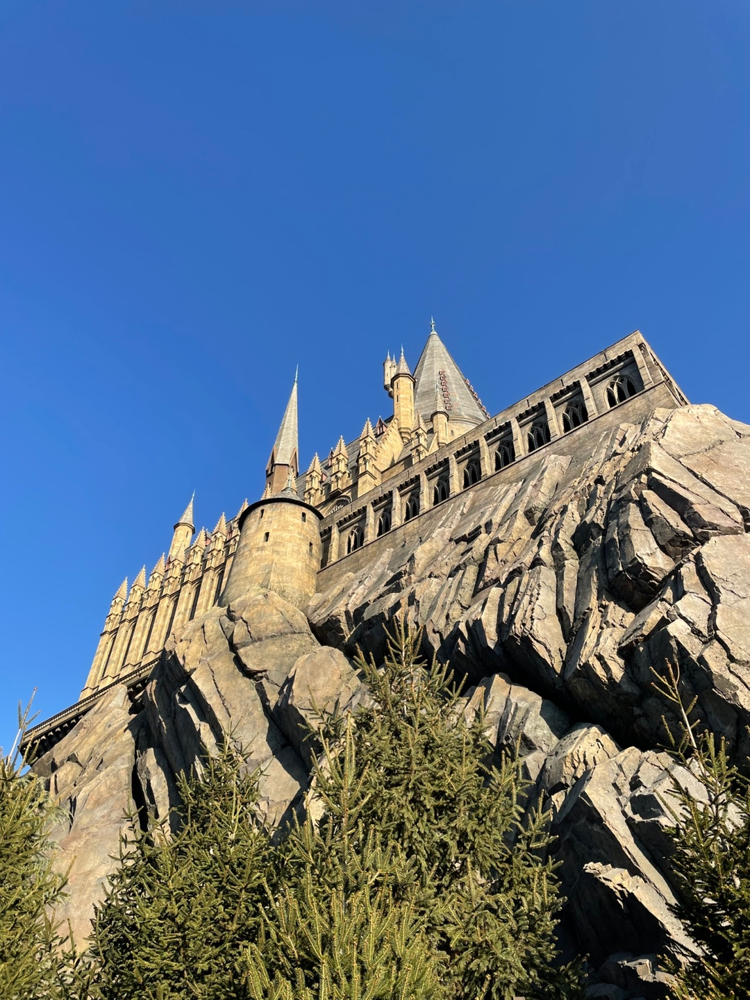
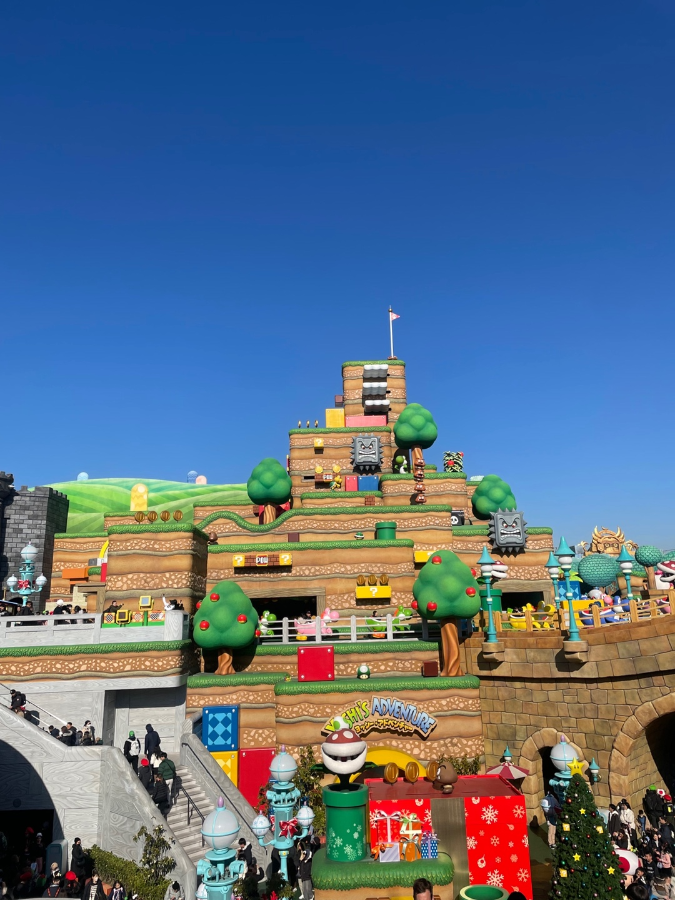
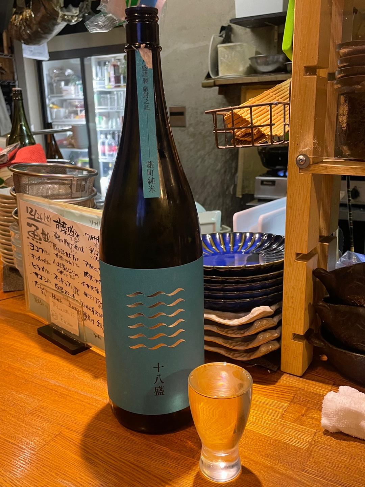
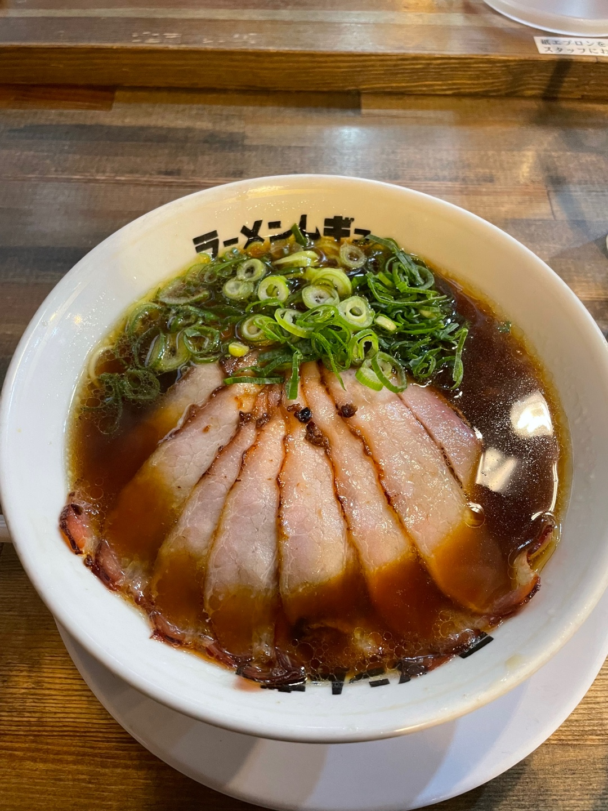
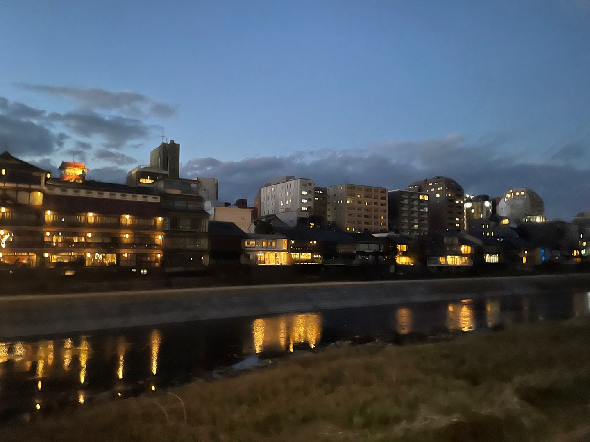
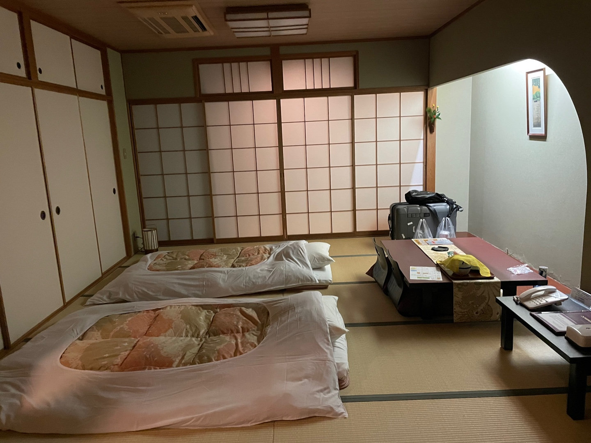
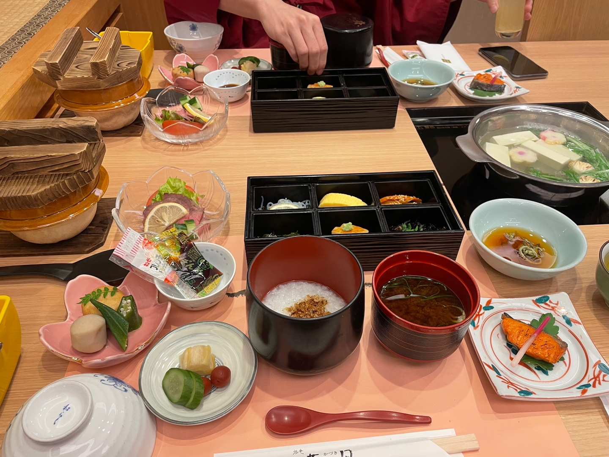
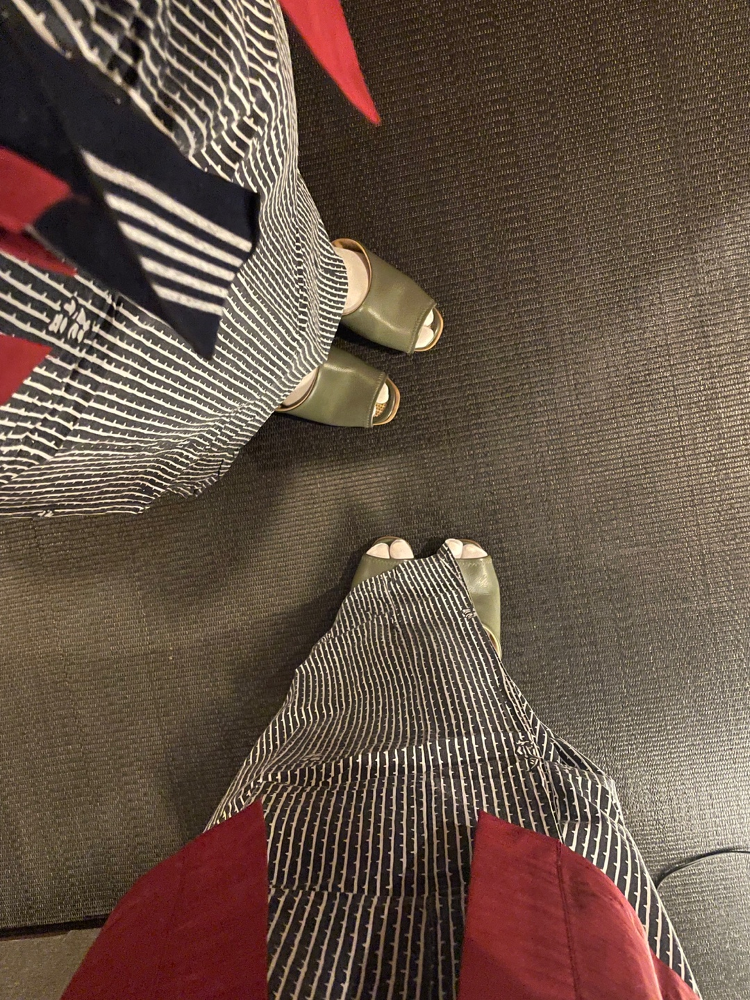

기억에 남는 여행지









안녕하세요, 집에서 공부할때 몬스터 에너지 드링크가 없으면 공부를 못해요. 그래서 매달 몬스터 24캔을 쿠팡에서 주문하곤 합니다. 요즘 몬스터를 안마신지 오래돼서 오늘 저녁에 먹을까 합니다.
몬스터를 처음 마신건 고3 수능 공부하면서 마시기 시작했고, 즐겨 마시기 시작한건 웹개발을 배운 이후부터 입니다. 몬스터를 따고 마시기 시작하면 그때부터 집중력이 3배 늘어나고 무엇이든지 할 수 있겠다라는 자신감이 생깁니다. 그래서 제 인생 음료로 뽑혔습니다. 몬스터가 없었더라면 우테코 합격은 기대도 못했을것 같아요.
짱구는 못말려 불고기 로드는 짱구네 가족이 불고기 파티를 계획하는 과정에서 엄청난 음모에 휘말려 일어나는 일을 그려낸 작품입니다. 단순한 어린이 애니메이션이라 생각하실수도 있지만, 사실 그 속에는 우리가 일상에서 겪는 갈등과 화해의 과정이 녹아 있어요. 음식을 둘러싼 싸움이지만 결국 "가족과 함께하는 한 끼가 얼마나 소중한가"를 깨닫게 되는 과정이기도 합니다. "맛있는 걸 함께 먹는 순간이야말로 인생에서 가장 행복한 순간이 아닐까?" 라는 메시지를 유쾌하게 전달해 제 인생 영화로 선정하였습니다.